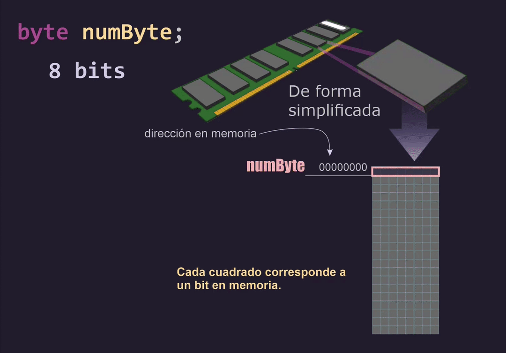
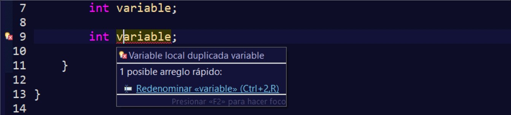
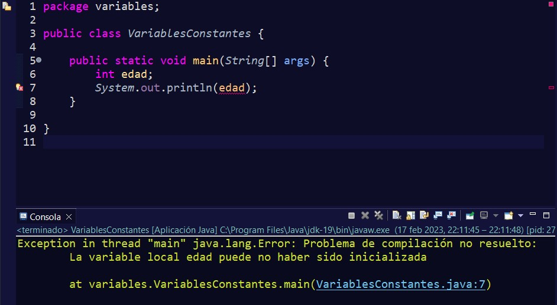
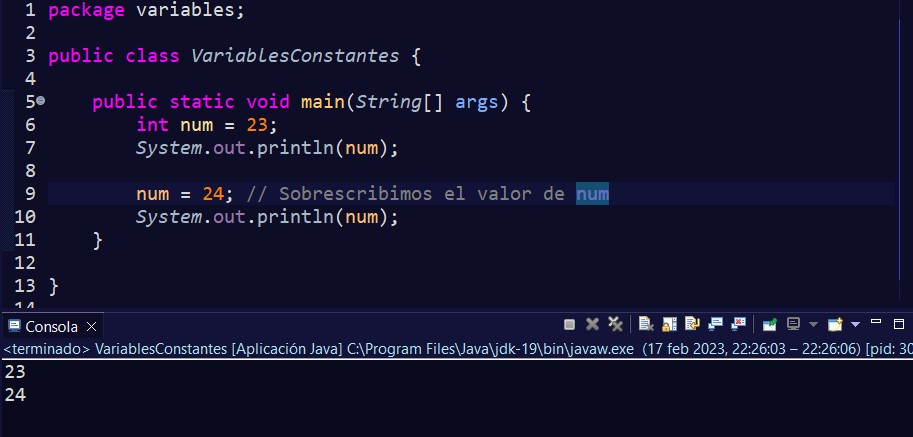

Las variables en Java se utilizan para reservar espacio en memoria, que variará según el tipo de dato introducido como se puede ver en la imagen:
Para definir una variable, basta con indicar el tipo de dato que va a almacenar y el nombre que ésta va a tener.
En estos dos casos, se les ha llamado variable1 y variable2, pero podríamos haberle dado el nombre que hubiéramos querido, siempre intentando que el nombre sea lo más descriptivo posible. Por ejemplo, si lo que queremos es indicar la edad, podríamos declarar la variable así:
También podríamos declarar varias variables del mismo tipo en una sola sentencia:
Hay que tener en cuenta que, una vez que se declara una variable, ésta no puede cambiar de tipo, si lo intentamos marcará un error y no podremos compilar el programa.
Como tampoco podremos volver a indicar de nuevo el tipo de dato que ésta tiene, ya que marcaría un error y nos indicaría que la variable ha sido ya asignada anteriormente y está duplicada.
Debemos ser conscientes que declarar una variable no significa que ya tenga algún valor en su interior, lo único que se ha hecho es reservar un espacio en memoria. Es más, si ahora mismo creamos una variable dentro del método main y no le asignamos un valor, al querer utilizarla, por ejemplo, para imprimir su contenido, ésta nos dará un error.
Anteriormente cuando vimos cómo imprimir por consola no se indicó que también podemos imprimir el valor de una variable con System.out.println(), para hacerlo, tendremos que escribir el nombre de nuestra variable sin comillas y así Java sabrá que nos estamos refiriendo a una variable y no a un String.
Inicializar una variable es darle un valor concreto a ésta una vez que se ha declarado.
Se puede hacer en la misma sentencia que se declara:
O se podrían declarar e inicializar varias variables en la misma sentencia.
También podríamos declarar la variable en una sentencia y en otra sentencia, más hacia delante en nuestro código, inicializarla.
Hay que tener en cuenta que, cuando declaramos un tipo de dato, el valor que se pasa debe ser un literal que admita el tipo de dato. No valdrá inicializar una variable de tipo char y dar de valor un string o un booleano, por ejemplo.
Puede ser que oigas el término identificador, pero no te asustes. Acabamos de verlo sin que te hayas dado cuenta ya que es el nombre que les asignamos a una variable para identificarla. Por ejemplo, aquí el identificador sería nombre:
Existen unas reglas obligatorias y otras por convenio para los identificadores, vamos a verlos:
Las variables pueden cambiar a lo largo de nuestro programa el valor que tienen en su interior, de ahí que se les haya denominado así. Si en algún momento queremos que tenga un nuevo valor, el valor antiguo sea sustituido por el nuevo que le hemos dado.
